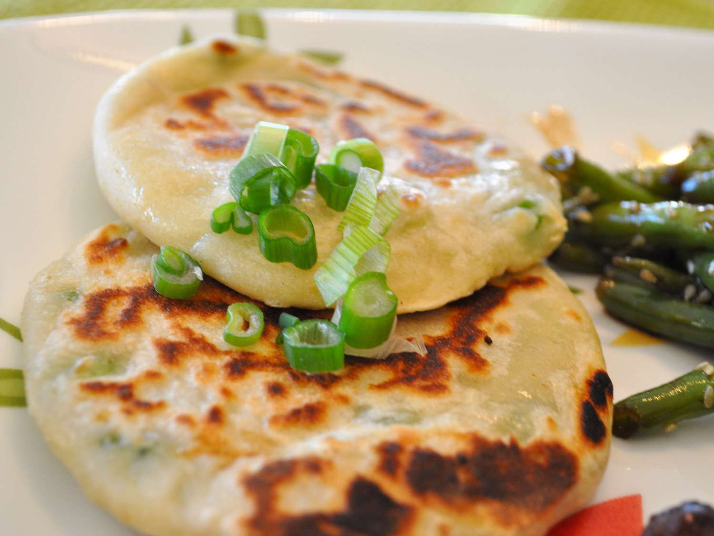

Scallion Pancakes

Description
An excellent and simple recipe, these will make some delicious green onion cakes that are addictive and are just as good, if not better, than the store bought ones.
Ingredients
- 3 cups bread flour
- 1 ¼ cups boiling water
- 2 tablespoons vegetable oil
- salt and pepper to taste
- 1 bunch green onions, finely chopped
- 2 teaspoons vegetable oil, or as needed
Instruction
- Use a fork to mix flour and boiling water in a large bowl. Knead dough into a ball. Cover bowl with plastic wrap; let dough rest for 30 to 60 minutes.
- Evenly divide dough into 16 pieces. Roll each piece into a 1/4 inch thick circle. Brush each circle with oil, season with salt and pepper, and sprinkle with about 1 teaspoon of green onions. Roll up, cigar style; coil each pancake and pinch open ends together to form a disc. Roll each circle flat to about 1/4 inch thickness.
- Heat 2 teaspoons oil in a large skillet. Fry cakes until golden brown, about 2 minutes on each side. Add more oil between batches, if necessary.